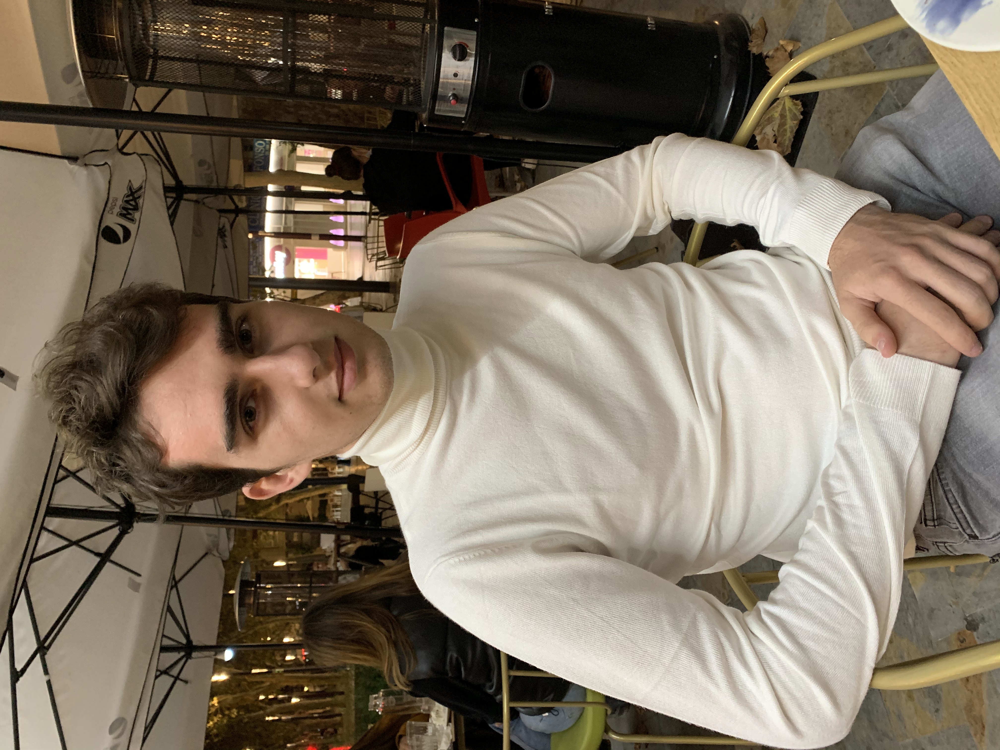

¿Quién es Félix Hernández?

Félix Hernández Muñoz-Yusta.
Nacido en Madrid el 14 de noviembre de 2001.
Estudió en Madrid en el colegio el Valle las Tablas. Actualmente estudiante de segundo curso en ESNE, en la carrera de Diseño y Desarrollo de Videojuegos, centrado en la rama de programación, actualmente aprendiendo C++, C#, HTML y con ligera experiencia previa de Java.
Abierto a trabajar en nuevos proyectos e interesado en aprender más sobre el mundo.
Desde bien joven ya le fascinaron siempre los ordenadores, consolas y todo tipo de dispositivos electrónicos. Conforme creció fue tratando de aprender más y más sobre los ordenadores. Siempre ha tenido claro que quería dedicarse a la industria digital, en la rama de la programación.
El BigData, el Machine Learning y la ciberseguridad son los tres aspectos que más le han interesado, atraído y que viendo como esta transcurriendo el mundo son quizás los que más futuro tienen actualmente.
A pesar de esto, cuando entró en la carrera, cambio su punto de vista cambió al ver cómo era realmente el mundo del desarrollo de videojuegos.
Actualmente, sigue formándose en este “mundo digital” con el fin de estar lo mejor preparado posible, y con la ilusión, de poder vivir de ello en un futuro.